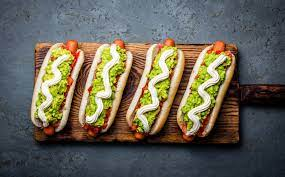

The ultra-versatiles completos

Looking for the king of improvisation?
I can't describe how much chileans
loves completos we can't just have enough of them
and they came in many differents forms!
You have a secret party and doesn't know what to cook? -completos-
Are to lazy to prepare a proper dinner? -completos-
just wanna eat something yummy? COMPLETOS!
Let's make a basic "completo italiano"
Ingredients
- Fresh hot dog bread
- Tomatoes
- Avocado
- Sausages
How to
- Wash your hands!
- Prepare your sausage as you liked, boiled or fried
- Cut your tomatoes in little squares, beware the knife!
- Open your avocado in half, extract all the avocado
and crush it with a fork, make a coarse avocado pulp
- Add salt as you liked
- Open your bred put your sausage, then put some tomatoe
and finish with a layer of avodado
- Finally add mayonaise or other sauces of your choice
ENJOY!
Let's go back